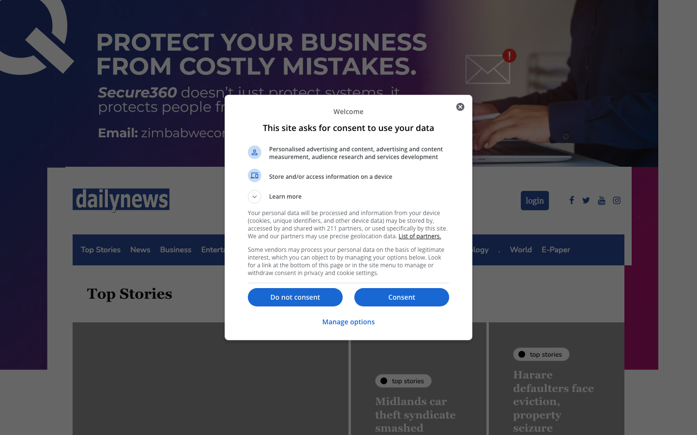

Overview
| Domain | dailynews.co.zw |
|---|---|
| Category | news |
| Sector tags | media |
| Theme | inhype |
| Tranco rank | 463008 |
| WP detection score | 100 / 100 |
| WP version | — |
| CDN | — |
| IP | 170.64.181.101 |
| Homepage size | 742 KB |
| Verified at | 2026-05-01T11:28:51.589107+00:00 |
Hosting fingerprint
| Host panel | plesk |
|---|---|
| Server header | nginx |
| TLS cert issuer | — |
| Reverse PTR | — |
Evidence: path:/plesk-stat/login.php3->plesk
Plugins detected (12)
WordPress signals
| Signal | Weight |
|---|---|
| wp_json_valid | +25 |
| link_header_wp_api | +20 |
| wp_content_path | +15 |
| wp_includes_path | +15 |
| rss_wp_generator | +10 |
| wp_login_200 | +10 |
| readme_html_wp | +8 |
| plugin_path | +5 |
| theme_path | +5 |
| xmlrpc_present | +5 |
Discovery sources
| Source | Hint |
|---|---|
| cc-cdx | CC-MAIN-2026-17 |
| tranco | rank=463008 |